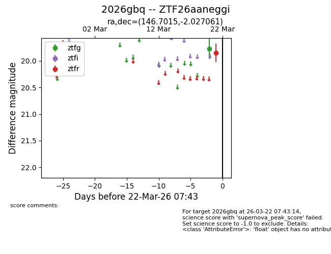
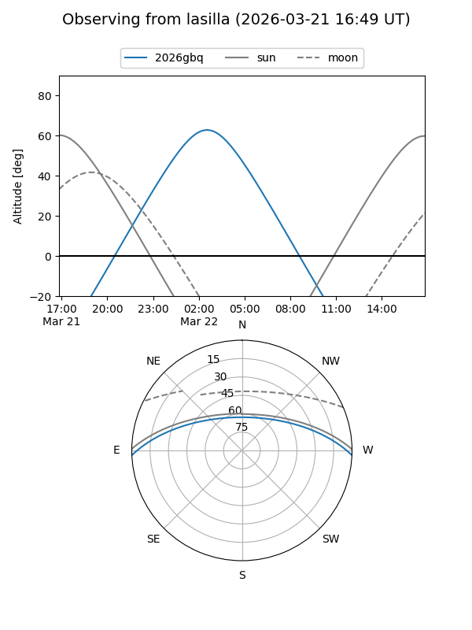
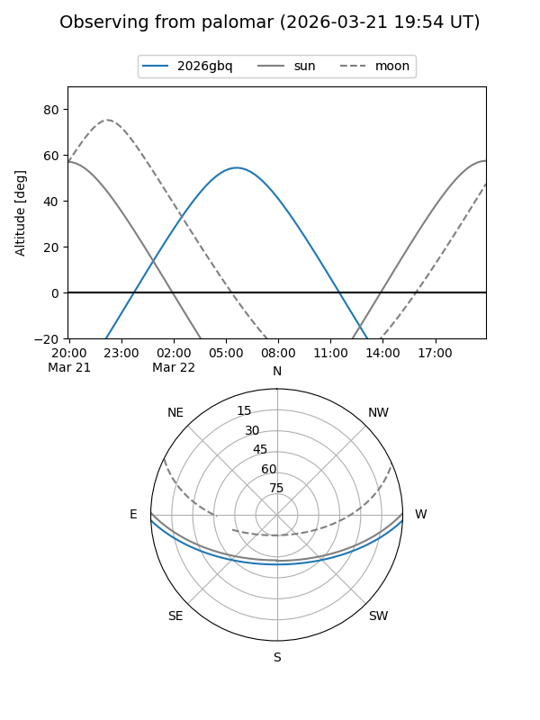
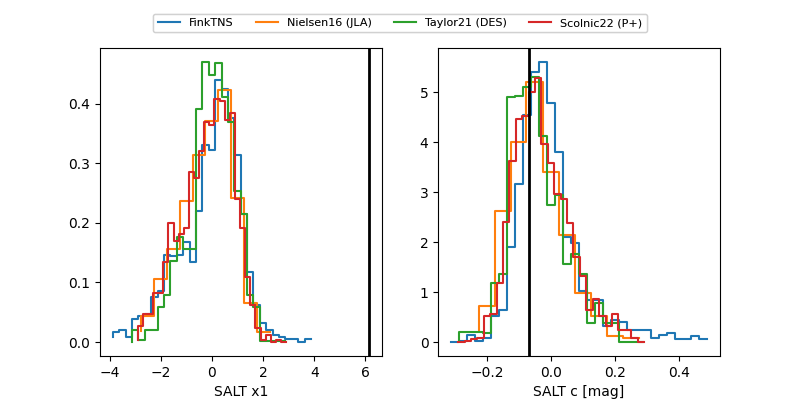

2026gbq
Target 2026gbq at 2026-03-22 07:45
Aliases and brokers:
FINK: link
Lasair: link
ALeRCE: link
TNS: link
YSE: link
alt names
ZTF26aaneggi (ztf,fink_ztf)
2026gbq (tns,yse)
Coordinates:
equatorial (ra, dec) = 146.7015,-2.02706
equatorial (HMS+DMS) = 09:46:48.37,-02:01:37.42
galactic (l, b) = (238.6469,+36.86674)
Flags:
Photometry:
last ztfg=19.77, ztfr=19.85
1 ztfg, 1 ztfr detections
Lightcurve

Visibility


Additional plots
